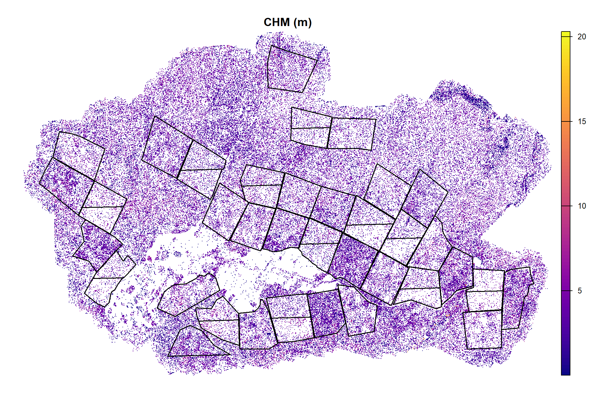
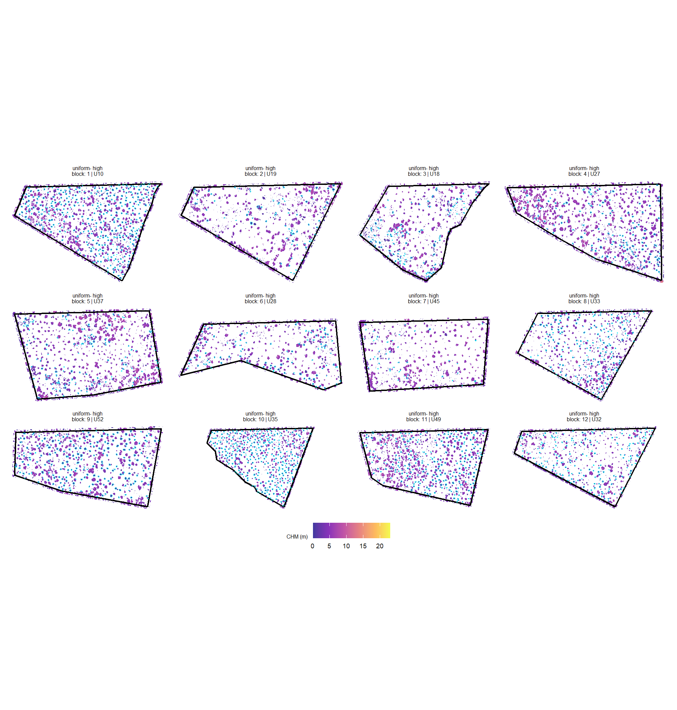
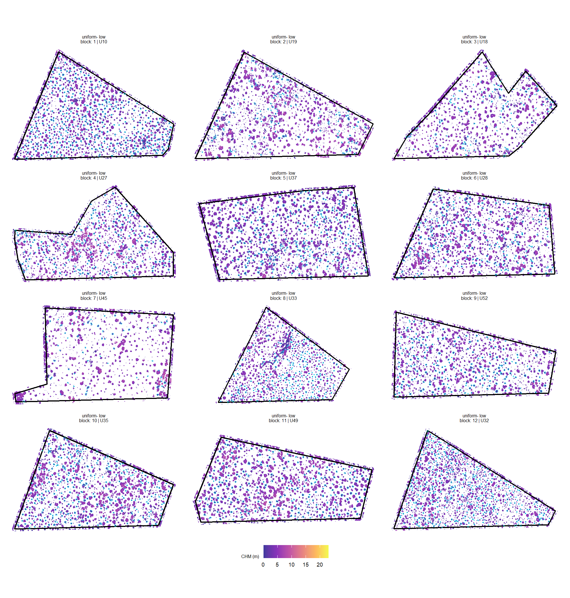
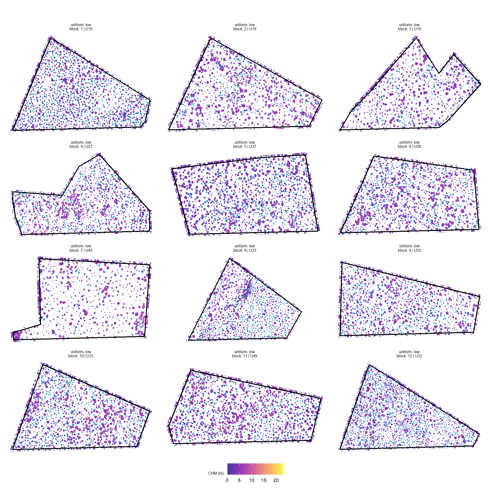
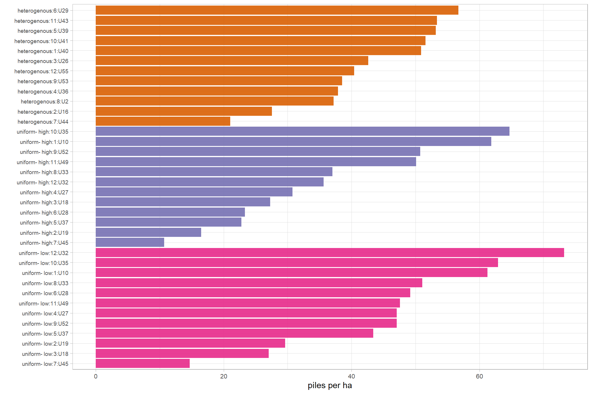

Section 3 Slash Piles
In this section, we’re going to detect slash piles from the CHM over the data extent and use RGB data to spectrally refine pile predictions. The objective is to use pile predictions as a mask to remove smaller, detected “trees” that are actually piles or downed trees/debris.
3.1 Slash Pile Detection Workflow
make sure we have the fine-resolution CHM and RGB data ready to go
RGB
## class : SpatRaster
## size : 105962, 163076, 3 (nrow, ncol, nlyr)
## resolution : 0.025883, 0.025883 (x, y)
## extent : 706698.8, 710919.7, 4191874, 4194616 (xmin, xmax, ymin, ymax)
## coord. ref. : NAD83(2011) / UTM zone 12N (EPSG:6341)
## source : BLM_CO_SWDF_DawsonFuelsTreatment_Ortho_202504.tif
## names : Red, Green, BlueCHM
# fine-resolution CHM raster
chm_rast <- terra::rast( file.path(c2t_process_dir, "chm_0.1m.tif") )
chm_rast## class : SpatRaster
## size : 27426, 42203, 1 (nrow, ncol, nlyr)
## resolution : 0.1, 0.1 (x, y)
## extent : 706698.8, 710919.1, 4191874, 4194616 (xmin, xmax, ymin, ymax)
## coord. ref. : NAD83(2011) / UTM zone 12N (EPSG:6341)
## source : chm_0.1m.tif
## name : focal_mean
## min value : 0.00
## max value : 22.59load the treatment unit boundaries
stand_boundary <-
"c:/data/usfs/slash_pile_detecting/data/Dawson_Data/units/units.shp" %>%
# "d:/BLM_CO_SWDF_DawsonFuelsTreatment/units/units.shp" %>%
sf::st_read(quiet=T) %>%
dplyr::rename_with(tolower) %>%
dplyr::rename_with(stringr::str_squish) %>%
dplyr::rename_with(make.names) %>%
dplyr::rename_with(~stringr::str_replace_all(.x, "\\.{2,}", ".")) %>%
dplyr::rename_with(~stringr::str_remove(.x, "\\.$")) %>%
dplyr::rename_with(~stringr::str_replace_all(.x, "\\.", "_")) %>%
sf::st_set_geometry("geometry") %>%
sf::st_transform(terra::crs(chm_rast)) %>%
dplyr::mutate(
unit_area_ha = as.numeric(sf::st_area(geometry))/10000
)
# stand_boundary %>% dplyr::glimpse()what treatments are there?
## tretmnt n
## 1 Control 12
## 2 Heterogenous 12
## 3 Uniform- HIgh 12
## 4 Uniform- Low 12plot the stands on the CHM
chm_rast %>%
# terra::aggregate(fact = 2, fun="max",na.rm=T,cores=lasR::half_cores()) %>%
terra::plot(col = viridis::plasma(n=100), main = "CHM (m)", axes = F)
terra::plot(
stand_boundary %>% terra::vect()
, add = T, border = "black", col = NA, lwd = 1.5
)
# stand_boundary %>%
# dplyr::ungroup() %>%
# sf::st_union() %>%
# sf::st_convex_hull() %>%
# sf::st_buffer(25) %>%
# terra::vect() %>%
# terra::plot(
# add = T, border = "red", col = NA, lwd = 2
# )let’s crop the RGB and CHM to limit the amount of data we need to process
we’ll also make the RGB data more coarse since we only need ~0.06-0.1 m resolution data for the spectral filtering step in the pile detection workflow
# outside boundary of stand units with buffer
crop_bound_temp <- stand_boundary %>%
dplyr::ungroup() %>%
sf::st_union() %>%
sf::st_convex_hull() %>%
sf::st_buffer(25)
## function to change the resolution of RGB
change_res_fn <- function(
r
, my_res=1
, m = "bilinear"
# , ofile = tempfile(fileext = ".tif")
, ofile = NULL
){
if(terra::res(r)[1] == my_res){
return(r)
}else{
r2 <- r
terra::res(r2) <- my_res
if(!inherits(ofile,"character")){
r2 <- terra::resample(r, r2, method = m)
}else{
r2 <- terra::resample(r, r2, method = m, filename=ofile, overwrite = T)
}
return(r2)
}
}
###############################################################
# clip rgb to boundary and resample to change resolution
###############################################################
dir_temp <- c2t_process_dir
rgb_fnm_temp <- file.path(dir_temp,"pj_rgb_rast.tif") # what should the compiled rgb be called?
if(!dir.exists(dir_temp)){dir.create(dir_temp, showWarnings = F)}
if(!file.exists(rgb_fnm_temp)){
# Crop the raster to the rectangular extent of the polygon
# Specify a filename to ensure the result is written to disk
crop_rgb_rast_temp <- rgb_rast %>%
terra::crop(
crop_bound_temp %>%
terra::vect() %>%
terra::project(terra::crs(rgb_rast))
, filename = tempfile(fileext = ".tif")
, mask = T
, overwrite = TRUE
)
## apply the change_res_fn for our analysis we don't need such finery
# this takes too long...
rgb_rast <- change_res_fn(rgb_rast, my_res=0.06, ofile = rgb_fnm_temp)
}else{
rgb_rast <- terra::rast(rgb_fnm_temp)
}
###############################################################
# clip chm to boundary
###############################################################
chm_fnm_temp <- file.path(dir_temp, paste0("crop_",basename(terra::sources(chm_rast))) ) # what should the compiled rgb be called?
if(!dir.exists(dir_temp)){dir.create(dir_temp, showWarnings = F)}
if(!file.exists(chm_fnm_temp)){
# Crop the raster to the rectangular extent of the polygon
# Specify a filename to ensure the result is written to disk
chm_rast <- chm_rast %>%
terra::crop(
crop_bound_temp %>%
terra::vect() %>%
terra::project(terra::crs(chm_rast))
, filename = chm_fnm_temp
, mask = T
, overwrite = TRUE
)
}else{
chm_rast <- terra::rast(chm_fnm_temp)
}check the new raster data
## class : SpatRaster
## size : 45710, 70348, 3 (nrow, ncol, nlyr)
## resolution : 0.06, 0.06 (x, y)
## extent : 706698.8, 710919.7, 4191874, 4194616 (xmin, xmax, ymin, ymax)
## coord. ref. : NAD83(2011) / UTM zone 12N (EPSG:6341)
## source : pj_rgb_rast.tif
## names : Red, Green, Blue
## min values : 0.0000, 0.0000, 0.0000
## max values : 253.1589, 251.0938, 248.0194## class : SpatRaster
## size : 25292, 39925, 1 (nrow, ncol, nlyr)
## resolution : 0.1, 0.1 (x, y)
## extent : 706801.4, 710793.9, 4192002, 4194532 (xmin, xmax, ymin, ymax)
## coord. ref. : NAD83(2011) / UTM zone 12N (EPSG:6341)
## source : crop_chm_0.1m.tif
## name : focal_mean
## min value : 0.00
## max value : 22.59run the piles detection workflow using cloud2trees:::piles_workflow(); note, the ::: implies the functionality is internal to the package
fnm_temp <- file.path(c2t_process_dir,"piles_detect.gpkg")
if(!file.exists(fnm_temp)){
piles_workflow_ans <- cloud2trees:::piles_workflow(
chm_rast = chm_rast
, seg_method = "watershed"
, min_ht_m = 0.75
, max_ht_m = 3.0
, min_area_m2 = 2.0
, max_area_m2 = 22.5
, min_convexity_ratio = 0.55
, min_circularity_ratio = 0.35
, smooth_segs = T
, outfile = fnm_temp
, spectral_weight = 5
, rgb_rast = rgb_rast
, red_band_idx = 1
, green_band_idx = 2
, blue_band_idx = 3
, filter_return = F
)
# just get the piles
piles_workflow_ans <- piles_workflow_ans$segs_sf
}else{
piles_workflow_ans <- sf::st_read(fnm_temp, quiet = T)
}3.2 Candidate Pile Review
we should have gotten a list of candidate slash pile locations which we’ll spectrally filter after we look at a few examples
## Rows: 50,886
## Columns: 22
## $ pred_id <dbl> 3, 68, 75, 143, 151, 178, 227, 229, 343, 366, 510, …
## $ convexity_ratio <dbl> 0.6850095, 0.7985560, 0.8740648, 0.8054011, 0.69533…
## $ circularity_ratio <dbl> 0.4366637, 0.4346449, 0.4641106, 0.4544880, 0.41981…
## $ area_m2 <dbl> 5.270, 6.925, 8.020, 6.295, 5.465, 3.465, 10.045, 2…
## $ volume_m3 <dbl> 12.931723, 15.023012, 12.628348, 10.460978, 12.5403…
## $ max_height_m <dbl> 3.000000, 2.930000, 2.830000, 3.000000, 3.000000, 3…
## $ volume_per_area <dbl> 2.4538374, 2.1693880, 1.5746070, 1.6617915, 2.29465…
## $ diameter_m <dbl> 3.238827, 3.900000, 4.386342, 3.769615, 3.395585, 2…
## $ rast_agg_grvi <dbl> 1.852449e-02, 1.391539e-02, 6.146593e-03, -2.349146…
## $ rast_agg_rgri <dbl> 0.9636249, 0.9725512, 0.9877819, 1.0000470, 1.00835…
## $ rast_agg_vdvi <dbl> 0.044285724, 0.060734405, 0.066752846, 0.014706555,…
## $ rast_agg_exgr <dbl> -0.065313345, -0.045324605, -0.049583234, -0.116836…
## $ rast_agg_Lab_a <dbl> -4.0581156, -5.5319379, -5.4390111, -0.9861935, -1.…
## $ rast_agg_hsv_hue <dbl> 74.35908, 67.03060, 62.75708, 68.82339, 56.30680, 6…
## $ inrange_th_grvi <int> 0, 0, 0, 1, 1, 0, 0, 1, 0, 1, 0, 1, 1, 1, 1, 0, 1, …
## $ inrange_th_rgri <int> 1, 1, 1, 1, 1, 1, 1, 1, 1, 1, 1, 1, 1, 1, 1, 1, 1, …
## $ inrange_th_vdvi <int> 0, 0, 0, 1, 0, 0, 0, 1, 0, 0, 0, 1, 1, 1, 0, 0, 1, …
## $ inrange_th_exgr <int> 1, 1, 1, 1, 1, 1, 0, 1, 1, 1, 1, 1, 1, 1, 1, 1, 1, …
## $ inrange_th_Lab_a <int> 1, 0, 0, 1, 1, 1, 0, 1, 0, 1, 0, 1, 1, 1, 1, 0, 1, …
## $ inrange_th_hsv_hue <int> 0, 0, 0, 0, 0, 0, 0, 1, 0, 0, 0, 1, 0, 1, 0, 0, 1, …
## $ inrange_th_votes <dbl> 3, 2, 2, 5, 4, 3, 1, 6, 2, 4, 2, 6, 5, 6, 4, 2, 6, …
## $ geom <POLYGON [m]> POLYGON ((708386.8 4194402,..., POLYGON ((7…lets zoom-in on a single stand to look at the candidate pile locations in blue within the unit on the CHM
chm_rast %>%
terra::crop(
stand_boundary %>%
dplyr::filter(tolower(tretmnt)!="control") %>%
dplyr::slice(1) %>%
sf::st_transform(terra::crs(chm_rast)) %>%
sf::st_buffer(5) %>%
terra::vect()
) %>%
terra::plot(col = viridis::plasma(n=100), main = "CHM (m)", axes = F)
terra::plot(
stand_boundary %>%
dplyr::filter(tolower(tretmnt)!="control") %>% dplyr::slice(1) %>% terra::vect()
, add = T, border = "black", col = NA, lwd = 1.5
)
piles_workflow_ans %>%
dplyr::filter(inrange_th_votes>=6) %>%
dplyr::inner_join(
piles_workflow_ans %>%
sf::st_point_on_surface() %>%
sf::st_transform(sf::st_crs(stand_boundary)) %>%
sf::st_intersection(
stand_boundary %>%
dplyr::filter(tolower(tretmnt)!="control") %>%
dplyr::slice(1)
) %>%
sf::st_drop_geometry() %>%
dplyr::select(pred_id)
, by = "pred_id"
) %>%
sf::st_transform(terra::crs(chm_rast)) %>%
terra::vect() %>%
terra::plot(
add = T, border = "cyan", col = NA, lwd = 1.8
)
filter for piles only in treatment units since we don’t expect piles in non-treated areas
piles_workflow_ans <-
piles_workflow_ans %>%
dplyr::left_join(
piles_workflow_ans %>%
# pile determined in unit based on polygon center
sf::st_point_on_surface() %>%
sf::st_transform(sf::st_crs(stand_boundary)) %>%
sf::st_intersection(
stand_boundary %>%
dplyr::select(unit,block,tretmnt,unit_area_ha) %>%
dplyr::rename(type = tretmnt) %>%
dplyr::mutate(
type =
tolower(type) %>%
stringr::str_squish()
) %>%
dplyr::rename_with(.fn = ~paste0("trtmnt_", .x, recycle0 = T))
) %>%
sf::st_drop_geometry() %>%
dplyr::select(pred_id, tidyselect::starts_with("trtmnt_"))
, by = "pred_id"
) %>%
dplyr::mutate(
is_in_trtmnt_unit = ifelse(is.na(trtmnt_type) | trtmnt_type=="control",F,T)
)quick summary by treatment type
## is_in_trtmnt_unit trtmnt_type n
## 1 FALSE control 9615
## 2 FALSE <NA> 28439
## 3 TRUE heterogenous 7084
## 4 TRUE uniform- high 2276
## 5 TRUE uniform- low 3474let’s look at some candidate piles based on the inrange_th_votes variable which tells us how many of the 6 spectral index thresholds were met to distinguish a dead wood from living biomass. Where, a value of 5-6 represents high likelihood that the object is not living vegetation (e.g. piled slash) and 1-2 indicates a high likelihood that the object is living vegetation (e.g. small tree/shrub)
# sample from inrange_th_votes
inunit_piles_temp <-
piles_workflow_ans %>%
dplyr::filter(is_in_trtmnt_unit) %>%
dplyr::group_by(inrange_th_votes) %>%
# dplyr::filter(inrange_th_votes>=6) %>%
dplyr::slice_sample(n = 5) %>%
sf::st_transform(terra::crs(rgb_rast)) %>%
dplyr::ungroup() %>%
dplyr::arrange(inrange_th_votes)
# map over to plot
plts_temp <- 1:nrow(inunit_piles_temp) %>%
purrr::map(function(x){
sp_temp <- inunit_piles_temp %>% dplyr::slice(x)
rgb_temp <-
rgb_rast %>%
terra::crop(
sp_temp %>%
sf::st_point_on_surface() %>%
sf::st_buffer(8) %>%
sf::st_bbox() %>%
sf::st_as_sfc() %>%
terra::vect()
)
# convert raster to a data frame and create hex colors
# ?grDevices::rgb
rgb_df_temp <-
rgb_temp %>%
terra::as.data.frame(xy = TRUE) %>%
dplyr::rename(
red = 3, green = 4, blue = 5
) %>%
dplyr::mutate(
# rows that have missing color data
is_missing = is.na(red) | is.na(green) | is.na(blue)
# hex using 0s for NAs to avoid grDevices::rgb error
, hex_col = grDevices::rgb(
ifelse(is_missing, 0, red)
, ifelse(is_missing, 0, green)
, ifelse(is_missing, 0, blue)
, maxColorValue = 255
)
# back to NA
, hex_col = ifelse(is_missing, as.character(NA), hex_col)
) %>%
dplyr::select(-c(is_missing))
# plt
plt <-
ggplot2::ggplot() +
# add rgb base map
ggplot2::geom_tile(data = rgb_df_temp, mapping = ggplot2::aes(x = x, y = y, fill = hex_col), color = NA) +
# use identity scale so the hex codes are used directly
ggplot2::scale_fill_identity(na.value = "transparent") + # !!! don't take this out or RGB plot will kill your computer
ggplot2::geom_sf(
data = sp_temp
, color = "cyan", fill = NA, lwd = 1.5
) +
ggplot2::scale_x_continuous(expand = c(0, 0)) +
ggplot2::scale_y_continuous(expand = c(0, 0)) +
ggplot2::coord_sf(expand = F) +
ggplot2::theme_void() +
ggplot2::theme(
legend.position = "none"
)
return(plt)
})
# plts_temp[[1]]plot with patchwork
wplts_temp <- patchwork::wrap_plots(plts_temp, ncol = 5, nrow = 6) +
patchwork::plot_annotation(
tag_levels = list(
# as.vector(rbind(paste("Spectral Thrshlds Met", 1:6), matrix("", nrow = 4, ncol = 6)))
rep("", 30) %>% replace(seq(3, 30, by = 5), paste("Spectral Thrshlds Met", 1:6))
)
) &
ggplot2::theme(
plot.tag.position = "top"
, plot.tag = ggplot2::element_text(size = 10, face = "bold", hjust = 0.5)
)
# huh?
wplts_temp
based on this visual inspection, we’ll use all detected piles that meet at least 5 thresholds for our mask to remove detected “trees” that are likely not trees
3.3 Slash Pile Summary Statistics
first we’ll plot the slash piles in a treatment unit overlaid on the CHM
unt_temp <- piles_workflow_ans %>%
sf::st_drop_geometry() %>%
dplyr::filter(is_in_trtmnt_unit) %>%
dplyr::distinct(trtmnt_type,trtmnt_block,trtmnt_unit) %>%
dplyr::arrange(trtmnt_type,trtmnt_block,trtmnt_unit)
plts_temp <-
1:nrow(unt_temp) %>%
purrr::map(function(x){
unit_temp <- stand_boundary %>%
dplyr::filter(
unit == unt_temp$trtmnt_unit[x]
, block == unt_temp$trtmnt_block[x]
, stringr::str_squish(tolower(tretmnt)) == unt_temp$trtmnt_type[x]
) %>%
sf::st_transform(terra::crs(chm_rast))
piles_temp <- piles_workflow_ans %>%
dplyr::inner_join(
unt_temp %>% dplyr::slice(x)
, by = dplyr::join_by(trtmnt_type,trtmnt_block,trtmnt_unit)
) %>%
dplyr::filter(
is_in_trtmnt_unit
,inrange_th_votes>=5
)
chm_temp <- chm_rast %>%
terra::crop(
unit_temp %>% sf::st_buffer(5) %>% terra::vect()
, mask = T
) %>%
terra::aggregate(fact=2, fun = "max", na.rm = T) %>%
terra::as.data.frame(xy=T) %>%
dplyr::rename(f = 3)
# plt
ggplot2::ggplot() +
ggplot2::geom_tile(
data = chm_temp
, mapping = ggplot2::aes(x=x,y=y,fill=f)
, color = NA
) +
ggplot2::scale_fill_viridis_c(
option = "plasma", alpha = 0.8
, limits = c(0,floor(terra::minmax(chm_rast)[2]*1.02))
) +
ggplot2::geom_sf(data = unit_temp, fill = NA, color = "black", lwd = 0.8) +
ggplot2::geom_sf(
data = piles_temp
, fill = NA, color = "cyan", lwd = 0.3
) +
ggplot2::labs(
subtitle = paste0(
piles_temp$trtmnt_type[1]
, "\nblock: "
, piles_temp$trtmnt_block[1]
, " | "
, piles_temp$trtmnt_unit[1]
)
, fill = "CHM (m)"
) +
ggplot2::theme_void() +
ggplot2::theme(
legend.position = "bottom"
, legend.title = ggplot2::element_text(size = 6)
, legend.text = ggplot2::element_text(size = 7)
, plot.subtitle = ggplot2::element_text(size = 6, hjust = 0.5)
)
})
# length(plts_temp)
# plts_temp[[1]]
# chm_rast %>%
# # terra::aggregate(fact = 2, fun="max",na.rm=T,cores=lasR::half_cores()) %>%
# terra::plot(col = viridis::plasma(n=100), main = "CHM (m)", axes = F)
# terra::plot(
# stand_boundary %>% terra::vect()
# , add = T, border = "black", col = NA, lwd = 1.5
# )
# terra::plot(
# piles_workflow_ans %>%
# dplyr::filter(is_in_trtmnt_unit) %>%
# terra::vect()
# , add = T, border = "cyan", col = NA, lwd = 1.5
# )heterogenous units
wplts_temp <- patchwork::wrap_plots(
plts_temp[1:12]
, ncol = 4
, guides = "collect"
) &
ggplot2::theme(
legend.position = "bottom"
# , legend.text = ggplot2::element_text(size = 7)
)
# huh?
wplts_temp
uniform - high units
wplts_temp <- patchwork::wrap_plots(
plts_temp[13:24]
, ncol = 4
, guides = "collect"
) &
ggplot2::theme(
legend.position = "bottom"
# , legend.text = ggplot2::element_text(size = 7)
)
# huh?
wplts_temp
uniform - low units
wplts_temp <- patchwork::wrap_plots(
plts_temp[25:36]
, ncol = 3
, guides = "collect"
) &
ggplot2::theme(
legend.position = "bottom"
# , legend.text = ggplot2::element_text(size = 7)
)
# huh?
wplts_temp
let’s aggregate the detected slash pile information by treatment unit
# hey
pile_sum_temp <- piles_workflow_ans %>%
sf::st_drop_geometry() %>%
dplyr::filter(
is_in_trtmnt_unit
, inrange_th_votes>=5
) %>%
dplyr::group_by(
trtmnt_type,trtmnt_block,trtmnt_unit, trtmnt_unit_area_ha
) %>%
dplyr::summarize(
n_piles = dplyr::n()
, dplyr::across(
.cols = c(area_m2, volume_m3)
, .fns = list(mean = ~mean(.x,na.rm=T), sum = ~sum(.x,na.rm=T))
)
) %>%
dplyr::ungroup() %>%
dplyr::mutate(piles_per_ha = n_piles/trtmnt_unit_area_ha) %>%
dplyr::arrange(trtmnt_type,trtmnt_block,trtmnt_unit )table it by treatment unit
pile_sum_temp %>%
dplyr::mutate(
dplyr::across(
.cols = c(n_piles, tidyselect::ends_with("_sum"))
, .fns = ~scales::comma(.x,accuracy=1)
)
, dplyr::across(
.cols = c(trtmnt_unit_area_ha, piles_per_ha, tidyselect::ends_with("_mean"))
, .fns = ~scales::comma(.x,accuracy=0.1)
)
) %>%
dplyr::relocate(
trtmnt_type,trtmnt_block,trtmnt_unit, trtmnt_unit_area_ha
, n_piles, piles_per_ha
) %>%
kableExtra::kbl(
caption = "slash pile quantity by treatment unit"
, col.names = c(
"type","block","unit","ha"
, "# piles", "piles ha<sup>-1</sup>"
, "mean pile<br>area (m<sup>2</sup>)"
, "tot. pile<br>area (m<sup>2</sup>)"
, "mean pile<br>bulk vol. (m<sup>3</sup>)"
, "tot. pile<br>bulk vol. (m<sup>3</sup>)"
)
, escape = F
# , digits = 2
) %>%
kableExtra::kable_styling(font_size = 9.7) %>%
kableExtra::column_spec(seq(4,10,by=2), border_right = TRUE, include_thead = TRUE) %>%
kableExtra::collapse_rows(columns = 1, valign = "top") %>%
kableExtra::scroll_box(height = "8.4in")| type | block | unit | ha | # piles | piles ha-1 |
mean pile area (m2) |
tot. pile area (m2) |
mean pile bulk vol. (m3) |
tot. pile bulk vol. (m3) |
|---|---|---|---|---|---|---|---|---|---|
| heterogenous | 1 | U40 | 9.1 | 464 | 50.9 | 7.1 | 3,306 | 5.8 | 2,676 |
| 2 | U16 | 9.5 | 262 | 27.6 | 6.6 | 1,719 | 6.6 | 1,717 | |
| 3 | U26 | 9.0 | 382 | 42.6 | 7.2 | 2,733 | 6.7 | 2,570 | |
| 4 | U36 | 8.5 | 322 | 37.9 | 7.1 | 2,290 | 8.7 | 2,804 | |
| 5 | U39 | 8.3 | 442 | 53.2 | 7.7 | 3,385 | 7.0 | 3,108 | |
| 6 | U29 | 9.2 | 520 | 56.7 | 7.6 | 3,973 | 6.3 | 3,267 | |
| 7 | U44 | 8.6 | 181 | 21.0 | 5.3 | 967 | 8.5 | 1,535 | |
| 8 | U2 | 8.3 | 308 | 37.2 | 6.7 | 2,062 | 8.3 | 2,555 | |
| 9 | U53 | 8.4 | 325 | 38.5 | 6.9 | 2,240 | 4.6 | 1,492 | |
| 10 | U41 | 8.2 | 423 | 51.6 | 7.2 | 3,038 | 5.5 | 2,323 | |
| 11 | U43 | 8.1 | 434 | 53.4 | 7.3 | 3,174 | 5.5 | 2,383 | |
| 12 | U55 | 9.2 | 372 | 40.4 | 7.2 | 2,666 | 5.3 | 1,955 | |
| uniform- high | 1 | U10 | 5.2 | 320 | 61.8 | 8.9 | 2,861 | 5.5 | 1,754 |
| 2 | U19 | 4.5 | 74 | 16.5 | 7.6 | 564 | 6.9 | 513 | |
| 3 | U18 | 4.1 | 112 | 27.3 | 6.9 | 778 | 6.3 | 707 | |
| 4 | U27 | 4.2 | 128 | 30.7 | 7.7 | 980 | 5.9 | 761 | |
| 5 | U37 | 5.6 | 128 | 22.8 | 6.7 | 859 | 8.1 | 1,043 | |
| 6 | U28 | 4.3 | 100 | 23.3 | 8.4 | 845 | 6.3 | 635 | |
| 7 | U45 | 4.3 | 46 | 10.7 | 4.7 | 215 | 6.2 | 284 | |
| 8 | U33 | 4.5 | 166 | 37.0 | 8.5 | 1,412 | 5.6 | 926 | |
| 9 | U52 | 4.1 | 208 | 50.7 | 9.2 | 1,913 | 6.0 | 1,254 | |
| 10 | U35 | 4.4 | 287 | 64.7 | 10.7 | 3,077 | 7.6 | 2,174 | |
| 11 | U49 | 4.4 | 220 | 50.1 | 8.7 | 1,919 | 5.8 | 1,278 | |
| 12 | U32 | 5.1 | 180 | 35.6 | 8.1 | 1,467 | 6.2 | 1,108 | |
| uniform- low | 1 | U10 | 5.2 | 317 | 61.3 | 8.9 | 2,827 | 5.5 | 1,737 |
| 2 | U19 | 4.5 | 133 | 29.6 | 6.3 | 834 | 6.7 | 897 | |
| 3 | U18 | 4.1 | 111 | 27.0 | 5.8 | 645 | 7.6 | 843 | |
| 4 | U27 | 4.2 | 196 | 47.1 | 7.6 | 1,485 | 5.4 | 1,057 | |
| 5 | U37 | 5.6 | 244 | 43.4 | 8.1 | 1,988 | 7.4 | 1,795 | |
| 6 | U28 | 4.3 | 211 | 49.2 | 6.7 | 1,407 | 5.1 | 1,072 | |
| 7 | U45 | 4.3 | 63 | 14.7 | 6.1 | 384 | 9.0 | 566 | |
| 8 | U33 | 4.5 | 229 | 51.1 | 7.1 | 1,634 | 5.8 | 1,321 | |
| 9 | U52 | 4.1 | 193 | 47.1 | 7.9 | 1,525 | 5.1 | 978 | |
| 10 | U35 | 4.4 | 279 | 62.9 | 7.0 | 1,944 | 5.6 | 1,566 | |
| 11 | U49 | 4.4 | 209 | 47.6 | 8.3 | 1,731 | 5.2 | 1,097 | |
| 12 | U32 | 5.1 | 370 | 73.2 | 6.3 | 2,316 | 6.0 | 2,229 |
plot piles per ha by treatment unit
pile_sum_temp %>%
dplyr::ungroup() %>%
dplyr::mutate(
dplyr::across(c(trtmnt_type,trtmnt_block,trtmnt_unit),as.ordered)
, my_fct = forcats::fct_cross(trtmnt_type,trtmnt_block,trtmnt_unit)
) %>%
dplyr::arrange(desc(trtmnt_type),piles_per_ha) %>%
dplyr::mutate(my_fct = forcats::fct_inorder(my_fct)) %>%
ggplot2::ggplot(mapping = ggplot2::aes(x=piles_per_ha,y=my_fct,fill=trtmnt_type,group = trtmnt_type)) +
ggplot2::geom_col(alpha = 0.9) +
ggplot2::scale_fill_manual(values = RColorBrewer::brewer.pal(n=4,name="Dark2")[2:4]) +
# ggplot2::scale_fill_brewer(palette = "Dark2") +
ggplot2::scale_x_continuous(labels = scales::comma) +
ggplot2::theme_light() +
ggplot2::labs(x = "piles per ha", y = "") +
ggplot2::theme(
legend.position = "none"
, axis.text.y = ggplot2::element_text(size = 7)
, axis.text.x = ggplot2::element_text(size = 8)
)
table it by treatment type
pile_sum_temp %>%
dplyr::group_by(trtmnt_type) %>%
dplyr::summarise(
dplyr::across(
.cols = c(trtmnt_unit_area_ha, n_piles, tidyselect::ends_with("_sum"))
, ~sum(.,na.rm = T)
)
) %>%
dplyr::mutate(
area_m2_mean = area_m2_sum/n_piles
, volume_m3_mean = volume_m3_sum/n_piles
, piles_per_ha = n_piles/trtmnt_unit_area_ha
) %>%
dplyr::mutate(
dplyr::across(
.cols = c(n_piles, tidyselect::ends_with("_sum"))
, .fns = ~scales::comma(.x,accuracy=1)
)
, dplyr::across(
.cols = c(trtmnt_unit_area_ha, piles_per_ha, tidyselect::ends_with("_mean"))
, .fns = ~scales::comma(.x,accuracy=0.1)
)
) %>%
dplyr::select(
trtmnt_type,trtmnt_unit_area_ha,n_piles
, piles_per_ha
, area_m2_mean,area_m2_sum
, volume_m3_mean,volume_m3_sum
) %>%
kableExtra::kbl(
caption = "slash pile quantity by treatment type"
, col.names = c(
"type","ha"
, "# piles", "piles ha<sup>-1</sup>"
, "mean pile<br>area (m<sup>2</sup>)"
, "tot. pile<br>area (m<sup>2</sup>)"
, "mean pile<br>bulk vol. (m<sup>3</sup>)"
, "tot. pile<br>bulk vol. (m<sup>3</sup>)"
)
, escape = F
# , digits = 2
) %>%
kableExtra::kable_styling(font_size = 10.1) %>%
kableExtra::column_spec(seq(2,8,by=2), border_right = TRUE, include_thead = TRUE) %>%
kableExtra::collapse_rows(columns = 1, valign = "top")| type | ha | # piles | piles ha-1 |
mean pile area (m2) |
tot. pile area (m2) |
mean pile bulk vol. (m3) |
tot. pile bulk vol. (m3) |
|---|---|---|---|---|---|---|---|
| heterogenous | 104.5 | 4,435 | 42.5 | 7.1 | 31,552 | 6.4 | 28,384 |
| uniform- high | 54.6 | 1,969 | 36.1 | 8.6 | 16,891 | 6.3 | 12,436 |
| uniform- low | 54.6 | 2,555 | 46.8 | 7.3 | 18,719 | 5.9 | 15,158 |